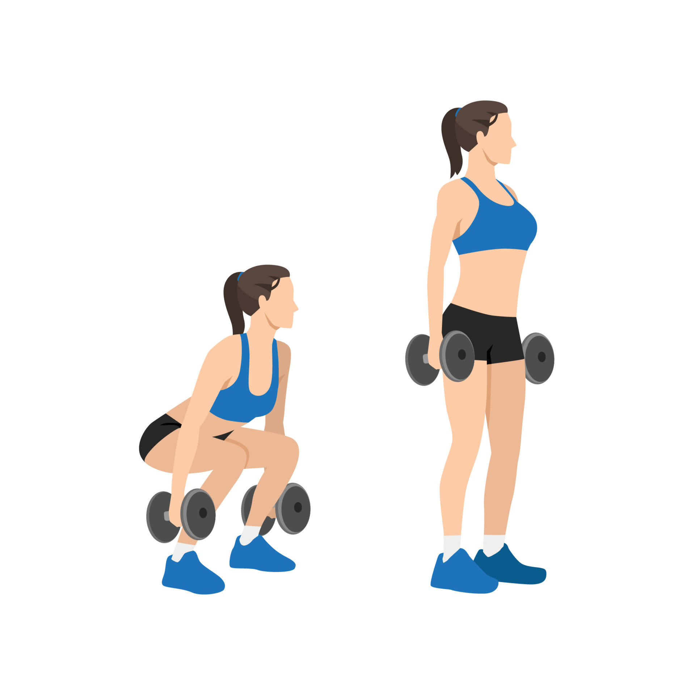
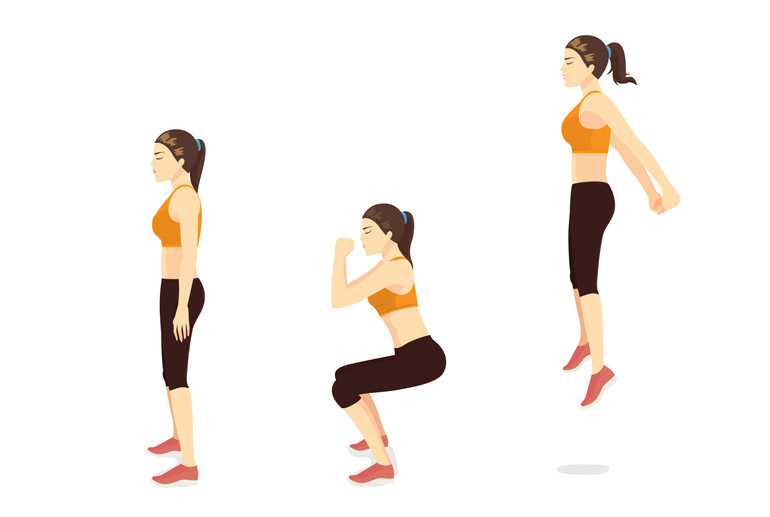

5 Amazing No Equipment Full-Body Workouts To Do At Home
At-home exercises to motivate you to workout and kick your excuses out of the window.
Legs/Lower Body Exercises
1.Burpees

How To Do
- Keep your feet together and assume a squat down position. Place your arms on the ground in front of your feet.
- Keep your feet together and get ready to jump back so that you can land in a push-up position. Bend your forearms and perform a single push-up in this position.
- Jump back to the previous position and bring your feet beneath your body. Leap into the air.
- Land smoothly and bend your legs.
- Repeat these steps again and practice as long as you can.
Sets And Reps
Try to do 3 sets of 12 reps of burpees as fast as possible.
2. Squats

How To Do
- Stand straight with your feet hip-width apart.
- Draw your arms forward, perpendicular to the ground.
- Keep your entire body tight and flex your stomach.
- Breathe deeply and lower your butt as if you are sitting on a chair. Your thighs should be parallel to the ground.
- Ensure your bent knees are not overshooting your toes. Keep your body straight and firm.
- Come back to your original position and repeat from the beginning.
3. Jump Squats

How To Do
- Stand straight with your feet shoulder-width apart, chest out, shoulders relaxed, and abs engaged.
- Push your hips out, flex your knees, and get into a sitting posture. Your knees should not overshoot your toes.
- Get back up and jump. Throw your hands to the side to propel your body up.
- Land softly on the floor and squat down again.
4. Jump Lunges

How To Do
- Stand straight with your feet shoulder-width apart, chest out, shoulders rolled back, and abs engaged.
- Take a step forward with your right leg.
- Flex both your knees and lower your body. Stop when your right thigh is parallel to the floor.
- Push your body up into a jump. Simultaneously, bring your left leg forward and right leg backward.
- Land softly on the floor.
5. Side Lunges

How To Do
- Stand straight with your feet shoulder-width apart, shoulders relaxed, and palms together.
- Lift your right leg off the floor and place it wide apart, as shown in the image. Make sure your toes are facing forward, shoulders relaxed, chest out, and core engaged.
- Flex your right knee, keep your spine straight, and lower your body to the right.
- Make sure your left leg is fully extended, and your left foot is flat on the floor. Keep your palms together for support. Hold this pose for a second and feel the stretch in your left inner thigh.
- Get back to the starting position.
- Do the same with the other leg also.